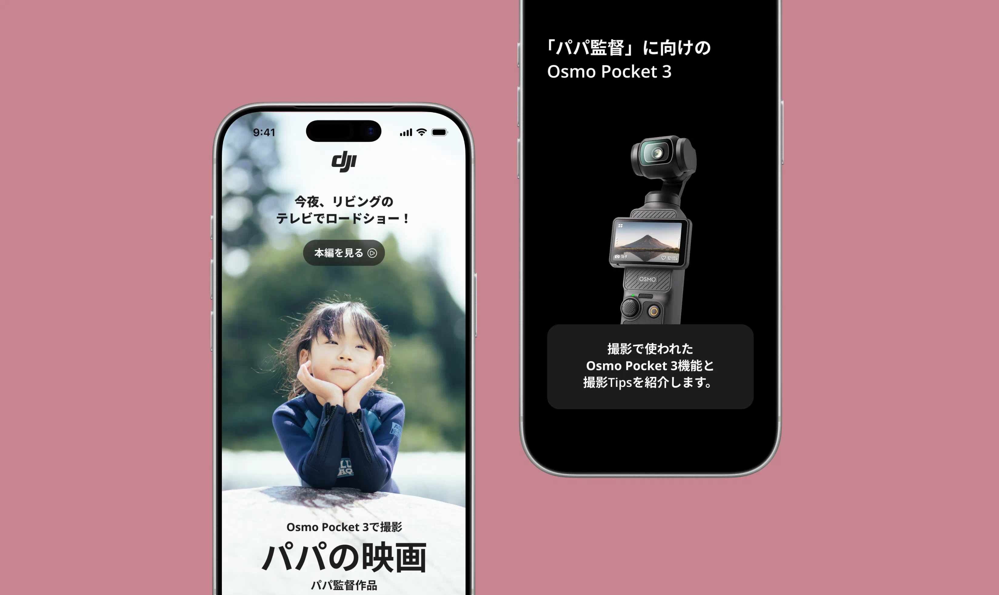
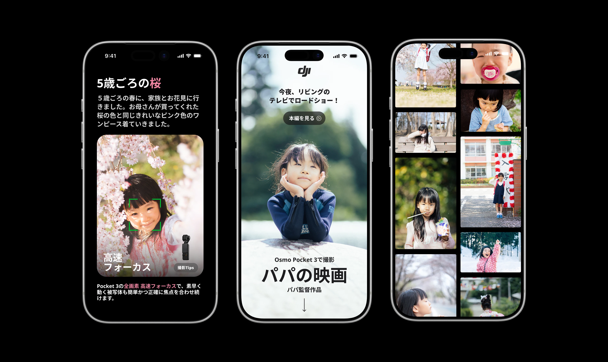

一年 後期授業 サイト設計
DJI Osmo Pocket 3 スペシャルサイト
2025年・冬
本課題では、DJIのOsmo Pocket 3を題材とし、従来のVloggerやガジェット好きといったコアユーザー層だけでなく、これまでアクションカメラや撮影機材に強い関心を持っていなかった一般層にも「欲しい」と感じてもらえることを課題として設定しました。 製品の高性能さやスペック訴求に偏るのではなく、日常生活の中での使いやすさや楽しさ、ライフスタイルへの自然な溶け込み方を伝えることで、製品イメージの間口を広げ、認知拡大と購買意欲の向上につなげることを目的としています。
調査を行い、製品の用途・特性・価格帯などを総合的に分析した結果、ターゲットユーザーを、30〜40代の既婚・子育て世代の男性に設定しました。 カメラというプロダクトの本質やその発展を改めて振り返る中で、単なる高性能な撮影機材としてではなく、「人生の中で一度きりの瞬間を残すための存在」である点に着目しました。そこで、子どもや家族の成長過程における「かけがえのない一瞬」をテーマとし、「パパの映画」をコンテンツの起点として構成しています。 サイト閲覧後に「自分も撮ってみたい」と感じてもらうことをゴールに据え、その感情の流れの中で、「パパの映画」という文脈を通して製品の機能や魅力を自然に伝える設計としました。動画が日常化した現代において、スペック訴求に偏ることなく、人の感情や記憶に寄り添う表現を重視することで、DJIのOsmo Pocket 3に、温かみのある新たなプロモーションの可能性を提示しています。
デザイン面では、公式サイトとのトーンを揃えることを意識し、配色やフォントには同様のスタイルを採用しました。背景にはブラックを基調とし、ページを読み進めるにつれて、まるで映画館で一本の映像作品を観ているかのような没入感が生まれるよう設計しています。 動画や写真を中心とした構成にすることで、子どもの成長というテーマを「情報として理解する」のではなく、「体験として感じてもらう」ことを重視しました。 また、サイトの随所にOsmo Pocket 3の存在をさりげなく配置することで、物語の中に自然と製品が溶け込み、楽しみながら読み進められる体験になるよう工夫しています。